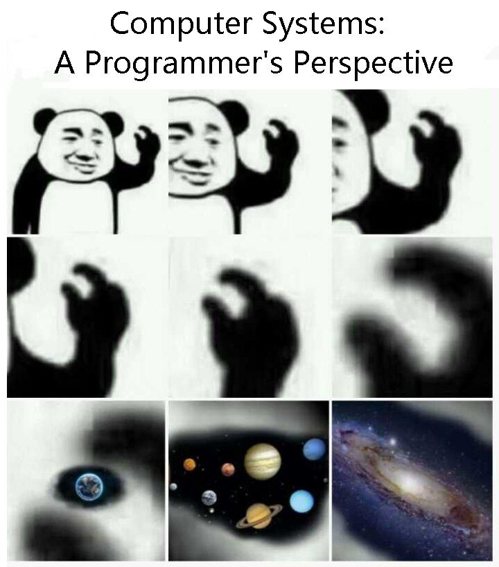
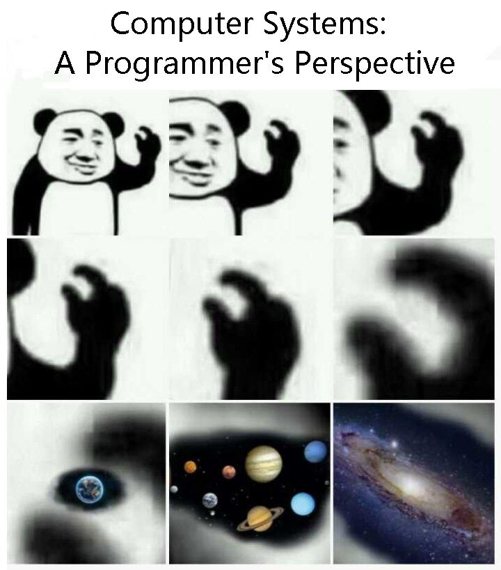
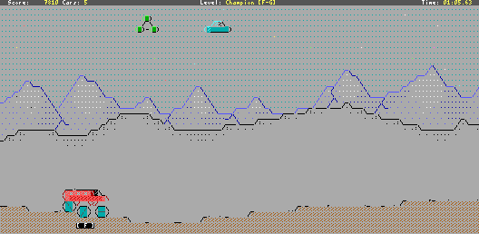
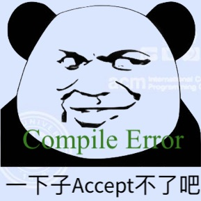

对 “教学” 的一些思考
- 热情且聪明的学生……听说相对论、量子力学……但是，当他们学完两年以前那种课程 (斜面、静电这样的内容) 后，许多人就泄气了 ——The Feynman Lectures on Physics
- Education is not the filling of a pail, but the lighting of a fire——William Butler Yeats
我们读书的时代 (2009)：大家都说操作系统很难教
- 使用
豆瓣评分高达 5.7/10的 “全国优秀教材”- 没有正经的实验 (16-bit code)，错误的工具链，调试全靠猜
- 为了一点微不足道的分数内卷、沾沾自喜、失去 integrity
- 长此以往，脖子都要被卡断了
同时，课堂教学是最容易被改善的 - 这门课
告诉你可以变得更强、真正的强
- 这门课
 

Prerequisites
计算机专业学生必须具备的核心素质 。
- 是一个合格的操作系统用户
- 会 STFW/RTFM 自己动手解决问题
- 不怕使用任何命令行工具
- vim, tmux, grep, gcc, binutils, ...
- 不怕写代码
- 能管理一定规模 (数千行) 的代码
- 能在出 bug 时默念 “机器永远是对的、我肯定能调出来的”
- 然后开始用正确的工具/方法调试
给 “学渣” 们的贴心提示：不要尝试 “架空学习”，回头补基础
0. 学术诚信 (Academic Integrity)
Academic integrity 不是底线，而是 “自发的要求”
- 对 “不应该做的事情” 有清楚的认识
不将代码上传到互联网 主动不参考别人完成的实验代码 不使用他人测试用例 (depends)
- 有些行为可能使你得到分数，但失去应有的训练
一些过去的例子
- 代码抄袭：那些让985学生沉默，211学生流泪的真相
- 我们也在 Academic Integrity 方面有一些考虑
1. 成为 Power User

感到 Linux/PowerShell/... 很难用？
- 没有建立信心、没有理解基本逻辑
- 没有找对材料/没有多问 “能不能再做点什么”
- Baidu v.s. Google/Github/SO v.s. ChatGPT
- 没有用对工具 (man v.s. tldr; 该用 IDE 就别 Vim)
- 过了入门阶段，都会好起来
2. 学会写代码
写代码 = 创造有趣的东西
- 命令行 + 浏览器就是全世界

- 我们还有 sympy, sage, z3, rich, ... 呢
- 不需要讲语言特性、设计模式、……
- 编就对了；你自然而然会需要它们的
最重要的：Get Your Hands Dirty
听课看书都不重要。独立完成编程作业即可理解操作系统。

应用视角 (设计)：Mini Labs x 6
- 使用 OS API 实现 “黑科技” 代码
硬件视角 (实现)：OS Labs x 5
- 自己动手实现一个真正的操作系统
全部 Online Judge
- 代码不规范 →
-Wall -Werror编译出错 - 代码不可移植 → 编译/运行时出错：
int x = (int)&y; - 硬编码路径/文件名 → 运行时出错：
open("/home/a/b", ...)